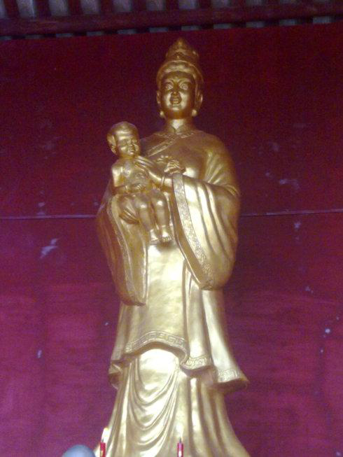

壮族布伢文化

兴宾区(原来宾县)民间保存有历史悠久、形态古老、形式多样、内涵丰富的以布伢(即花婆、花林圣母、婆王、娘娘)庙为主要载体，以布伢信仰和崇拜构成的壮族布伢文化体系。 布伢信仰源于原始社会的花图腾崇拜。兴宾区的布伢信仰崇拜形成于元末明初，并在明后期至清、民国时期达到鼎盛。
壮族布伢文化有较高的历史文化价值、学术研究价值和开发利用价值。对于研究其起源与发展、壮族发展史与珠江流域文明起源和发展，适应人们信仰、寻根问祖与朝圣的需要，丰富人民群众文化生活等方面都是非常有意义的。保护壮族布伢文化，对于解放传统生育思想观念，树立文明的婚育新风，尊重妇女，保护妇女儿童的合法权益，提升妇女的整体素质，提高妇女的社会地位、政治地位和经济地位，构建和谐社会等方面也都有着重要的现实意义。